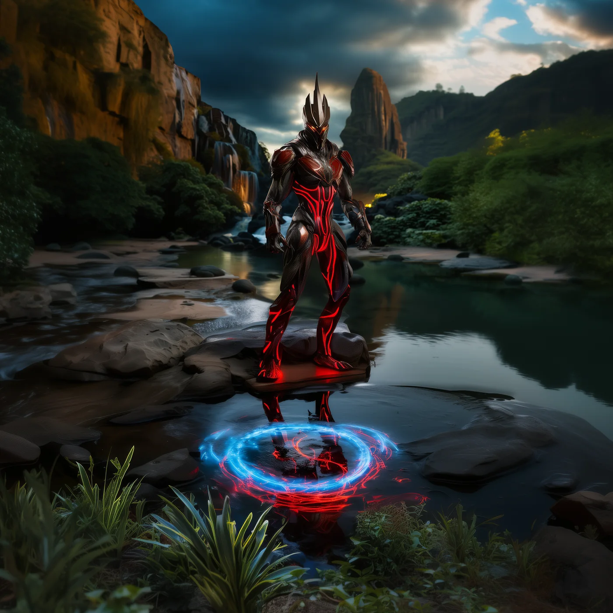
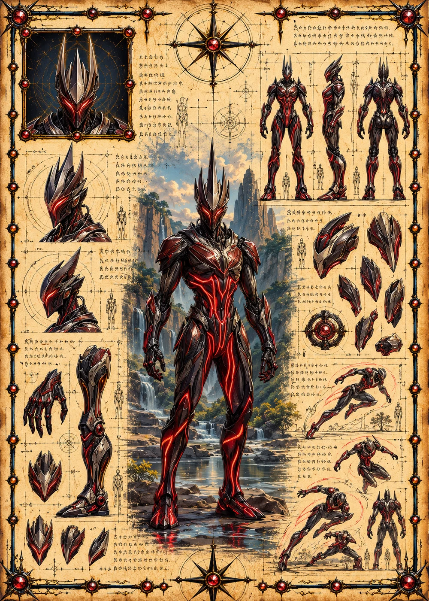

©
©
GENEZYS ARCHIVE · Earth 1 · Legionnaire
Thryne
Reversion Sage

Archive record
Thryne studies the past the way others study maps. The Backstep Pulse strikes once and drains as much as it wounds, as if rewinding the enemy's strength. Among the Exalted Order, Thryne keeps the record of every Still Hour ever sworn.
Combat signature
Backstep Pulse
160 Cosmara
220 Animus
240 Vitalis
Unleashes anarchic uproar: Deals 130 damage to 1 enemy. Reduces the target's Cosmara by 130.
Genezys 03:05 ™&©2026LEGIONS
